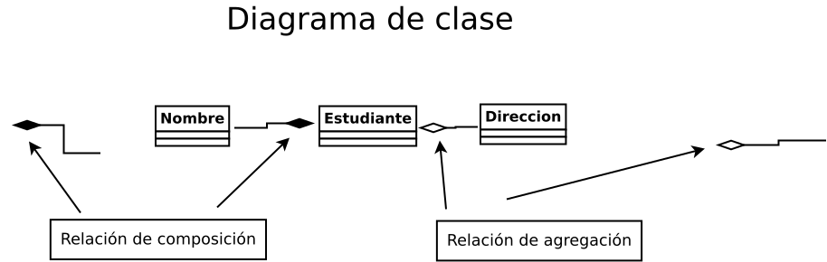

HERENCIA
El concepto de herencia
La herencia es la transferencia de características de una clase a otra. Para poder indicar al compilador la transferencia de características de una clase a otra, se utiliza la palabra clave extends.
Un ejemplo
La clase "B", es la superclase:
public class B { public void p(double i) { System.out.println(i * 2); } }La clase "A", es la subclase:
public class A { public void p(double i) { System.out.println(i); } }La herencia se realiza con el siguiente código:
public class A extends B { public void p(double i) { System.out.println(i); } public static void main(String[] args) { A a = new A(); a.p(10); a.p(10.0); } }Si se usa el siguiente código:
public class A extends B { public void p(int i) { System.out.println(i); } public static void main(String[] args) { A a = new A(); a.p(10); a.p(10.0); } }La determinación de las características de las superclase y la subclase, es la siguiente:
La clase ReinoVegetal. Las características de esta clase, son: el nombre del vegetal, el tipo de clima, el tiempo de vida.
La clase Arbol. Las características de la clase "Arbol", son: el tipo de árbol, la altura del árbol, tiene hojas o tiene hojas con flores.
La clase Arbol que herda de la clase ReinoVegetal. Hereda las características de la clase "reinoVegetal", son: el nombre, el tiempo de vida, el tipo de clima. Más las características de la clase "Arbol".La sintaxis es la siguiente:
La clase "ReinoVegetal", es la superclase:
public class ReinoVegetal { }La clase "Arbol", es la subclase:
public class Arbol { }La herencia se realiza con el siguiente código:
public class Arbol extends ReinoVegetal { }